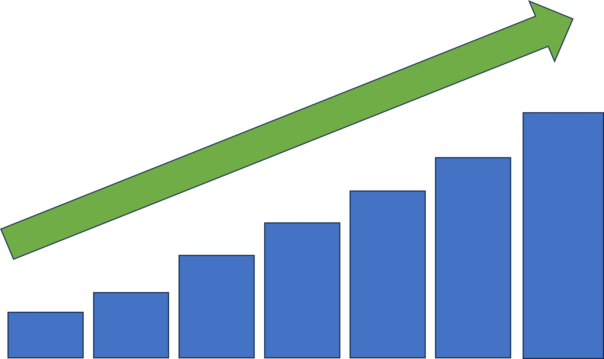
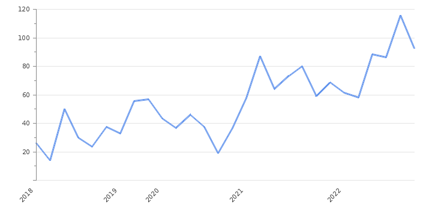

indian tourism
about
This page is about the Indian tourism and the major role of tourism in Indian economy. Indian tourism is one of the major and most significant industry which increases the economy of INDIA. Economy of a country place a vital role for the development of the country. It is the responsibility of the Government as well as the people to increase their country's economical status. One of the major source for this economy is tourism. Although tourism is not the only way to increase the economical background of India , still it generates high revenue.
This industry is growing faster and within the next few years we may get a huge passive revenue from tourism. Even now many people from other countries have made their journey towards India. From this page you will come to know about how tourism plays a major role for country's economical development and how could we increase the country's economy with the help of tourism.
role of tourism in economical development
In today's world , every country needs to strengthen its economical status inorder to participate in world conferences. Tourism in INDIA is developing rapidly since 21st century. This could be a passive income for the Government of INDIA. This will increase a country's economical background. Whenever the economy of the country increases , there could be no jobless person. This not only provide job to jobless but also helps to get an awarness about maintaining our environment neat and clean. This not only enhances the economical development but also enhances the personality of a human. In the modern era, tourism has become prestigious as a business due to the end of all the misconceptions related to tourism and the huge changes in the field of means of transport.
There are some factors which opposes the development of INDIA. Instead they just wanted to develop their own community and implement Dictatorship. Lets not dive deep into politics and some other controversial stuffs.
ways to increase economy with help of tourism
There are many way to increase the economy of INDIA with the help of tourism. Some of them are:
- Promote the destination as a hub for business events, conventions, and conferences to attract international visitors.
- Invest in the restoration and promotion of historical and cultural landmarks to draw visitors who appreciate history and culture.
- Support small businesses such as tour guides, local artisans, food vendors, and souvenir shops that cater to tourists.
- Create offerings that attract tourists throughout the year, including winter tourism or summer tourism.
- Eating local foods during the journey time.
- Buying new products and the special items of that particular area.
- Encourage collaboration between the government and private investors to fund tourism-related projects such as resorts, cruise ports, and visitor centers.
In this I have discussed a bit of ways to enhance the economical status of country (not only INDIA) with the help of tourism. Its our responsibility of develop our country's status